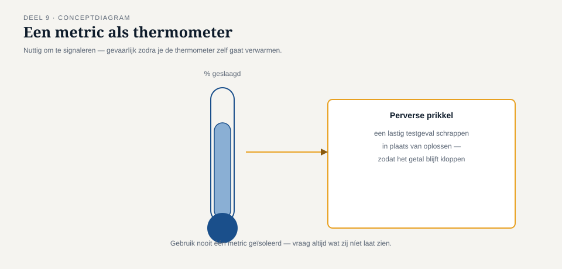

Deel 9 — Rapporteren en gereedschap
Slidedeck · Ductus-cursus Testen en Kwaliteitsborging · niveau 1 · deel 9 van 30 · 27 slides
Slidetypen: titleSlide, sectionSlide, bulletsSlide, statementSlide, quoteSlide, tableSlide, figureSlide, opdrachtSlide.
Slide 1 — titleSlide
Rapporteren en gereedschap Deel 9 · Niveau 1 Fundament Cursus Testen en Kwaliteitsborging
Slide 2 — quoteSlide
"Minimaal 95% geslaagd en geen open bevinding met prioriteit hoog."
Tot op de letter gehaald. En toch.
Slide 3 — statementSlide
Een exitcriterium dat je kunt halen
zonder de juiste dingen te hebben getest,
is geen kwaliteitscriterium. Het is een resultaatgarantie voor zichzelf.
Dit is bevinding T8 — de laatste van niveau 1.
Slide 4 — sectionSlide
1. Metrics en de perverse prikkel
Slide 5 — figureSlide

Slide 6 — bulletsSlide
Vier perverse prikkels uit deze casus
- "Aantal testgevallen" → makkelijke gevallen toevoegen (T2)
- "Percentage geslaagd" → lastige gevallen schrappen (de zes "niet uitgevoerd")
- "Aantal openstaande bevindingen" → prioriteit kunstmatig laag houden
- "Dekkingspercentage" → aanraken zonder gericht te testen (deel 6)
Slide 7 — opdrachtSlide
Opdracht 9.1 — Herken de perverse prikkel
Vier situaties. Welke metric wordt doel op zich? Wat is het gevolg?
15 minuten, individueel.
Slide 8 — sectionSlide
2. Een testrapport dat een besluit dient
Slide 9 — bulletsSlide
Vier vaste onderdelen
- Wat is vastgesteld
- Wat niet is onderzocht, en waarom
- De resterende onzekerheid — uitgeschreven
- Een aanbeveling, zonder het besluit te nemen
Slide 10 — opdrachtSlide
Opdracht 9.2 — Herschrijf het volledige eindrapport
Dezelfde 312 testgevallen. Dezelfde uitkomsten. Een radicaal ander rapport.
Max. één A4. Geen percentage zonder toelichting.
30 minuten, groepjes van drie.
Slide 11 — statementSlide
Zou dit rapport de livegang hebben tegengehouden?
Of had het in elk geval een ander gesprek opgeleverd?
Slide 12 — sectionSlide
3. Entry- en exitcriteria
Slide 13 — statementSlide
Zes testgevallen zonder bruikbare testdata.
De test startte toch.
Een entrycriterium had dat tegengehouden.
Slide 14 — opdrachtSlide
Opdracht 9.3 — Entry- of exitcriterium?
Vier uitspraken categoriseren.
10 minuten, individueel.
Slide 15 — statementSlide
Een exitcriterium dat nog nooit een livegang heeft tegengehouden,
heeft waarschijnlijk nog nooit het juiste getoetst.
Slide 16 — opdrachtSlide
Opdracht 9.4 — Exitcriterium of definition of done?
Voor welk risiconiveau volstaat de generieke DoD? Hoe vul je haar risicogebaseerd aan?
15 minuten, tweetallen.
Slide 17 — sectionSlide
4. Testgereedschap
Slide 18 — tableSlide
Zes categorieën, kort
| Categorie | Doet | Doet niet |
|---|---|---|
| Testmanagement | vastleggen | beslissen wat te testen |
| Bevindingenbeheer | workflow bewaken | kwaliteit garanderen |
| Automatisering | uitvoering versnellen | testontwerp vervangen |
| Statische analyse | structuur signaleren | betekenis vinden |
Slide 19 — statementSlide
Gereedschap versnelt wat al doordacht is.
Het compenseert nooit wat dat niet is.
Slide 20 — sectionSlide
5. Terugblik: T1 – T8
Slide 21 — tableSlide
Acht bevindingen, één rode draad
| # | Bevinding | Kern |
|---|---|---|
| T1 | Geen traceerbaarheid | onzichtbaar wat niet getest is |
| T2 | Dekking niet risicogewogen | aandacht volgde gemak |
| T3 | Verouderde testbasis | stilzwijgende veroudering |
| T4 | Geen statische toetsing | goedkoopste vindplaats overgeslagen |
| T5 | Onrepresentatieve omgeving | een ander, kleiner systeem getest |
| T6 | Testdata zonder randgevallen | intuïtie i.p.v. systematiek |
| T7 | Ketenpartner niet betrokken | het midden nooit getest |
| T8 | Exitcriterium een percentage | geen besluitwaarde |
Slide 22 — statementSlide
Geen van deze acht fouten ontstond uit onkunde.
Elke fout ontstond doordat iets dat iemand wist,
nooit een vorm kreeg die het testproces kon sturen.
Slide 23 — opdrachtSlide
Opdracht 9.5 — De acht bevindingen in één blik
Welke twee zijn het meest fundamenteel? Als zij nooit hadden bestaan — wat was er dan nooit ontstaan?
20 minuten, groepjes van drie.
Slide 24 — bulletsSlide
TMAP-lens
- Rapportage gekoppeld aan VOICE: wat zegt dit over de nagestreefde waarde?
- Terughoudend met één "kwaliteitsscore" of stoplichtkleur — precies vanwege perverse prikkels
- Meerdere indicatoren samen gelezen, nooit één metric alleen
Slide 25 — bulletsSlide
Examenaansluiting — CTFL hoofdstuk 5–6
- Rapportage, metrics, entry-/exitcriteria
- Gereedschapscategorieën (oriënterend)
Let op: entry ≠ exit — begin- versus eindvoorwaarde.
Slide 26 — bulletsSlide
Huiswerk
- Opdracht 9.6 — verzamel al je eerdere werk voor de capstone (verplicht)
- Oefentoets, tien vragen
Slide 27 — statementSlide
Volgende keer: examentraining en capstone
Alle acht bevindingen komen terug. Verdediging vanuit drie rollen.
Niveau 1 sluit hier af.